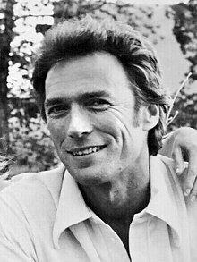

Clint Eastwood

Clint Eastwood is an American film actor, film director, film producer, singer, composer and lyricist. He has appeared in over 60 films. His career has spanned 65 years and began with small uncredited film roles and television appearances.[1] Eastwood has acted in multiple television series, including the eight-season series Rawhide (1959-1965). Although he appeared in several earlier films, mostly uncredited, his breakout film role was as the Man with No Name in the Sergio Leone-directed Dollars Trilogy: A Fistful of Dollars (1964), For a Few Dollars More (1965), and The Good, the Bad and the Ugly (1966), which weren't released in the United States until 1967/68.[2] In 1971, Eastwood made his directorial debut with Play Misty for Me.[3] Also that year, he starred as San Francisco police inspector Harry Callahan in Dirty Harry. The film received critical acclaim, and spawned four more films: Magnum Force (1973), The Enforcer (1976), Sudden Impact (1983), and The Dead Pool (1988).[4] In 1973, Eastwood starred in another western, High Plains Drifter. Three years later, he starred as Confederate guerrilla and outlaw Josey Wales in The Outlaw Josey Wales. In 1978, Eastwood starred opposite an orangutan in the action-comedy Every Which Way but Loose. Although it received largely negative reviews,[5] the film was a financial success, his highest-grossing film at that time, and generated a sequel.[6] In 1979, Eastwood portrayed prisoner Frank Morris in the Don Siegel-directed Escape from Alcatraz. Eastwood's debut as a producer began in 1982 with two films, Firefox and Honkytonk Man.[7] In 1985, Eastwood directed Pale Rider, which was the highest-grossing western of the 1980s.[8] Eastwood also has contributed music to his films, either through performing or composing. He received the Academy Award for Best Director and Best Picture for his 1992 western Unforgiven.[9] In 2003, Eastwood directed an ensemble cast, including Sean Penn, Tim Robbins, Kevin Bacon, Laurence Fishburne, Marcia Gay Harden, and Laura Linney, in Mystic River.[10] For their performances, Penn and Robbins respectively won Best Actor and Best Supporting Actor, making Mystic River the first film to win both categories since Ben Hur in 1959.[11] In 2004, Eastwood once again won the Academy Awards for Best Picture and Director, this time for Million Dollar Baby starring Hilary Swank.[12] In 2006, he directed the companion war films Flags of Our Fathers and Letters from Iwo Jima, which depict the Battle of Iwo Jima from the perspectives of the U.S. and Japan, respectively.[13] In 2008, Eastwood directed and starred as protagonist Walt Kowalski in Gran Torino. His most recent acting role was for the film Cry Macho (2021), which he also directed and produced for Warner Bros. Pictures, a studio he worked with from 1971 up until 2024 for Juror No. 2. Throughout his career, Eastwood has received numerous accolades. In 1996, Eastwood was a recipient of the AFI Life Achievement Award.[14] In 2006, he received the Stanley Kubrick Britannia Award for Excellence in Film from the BAFTA.[15] A 2009 recipient, he was awarded the National Medal of Arts in 2010, the highest such honor given by the United States government.[16]